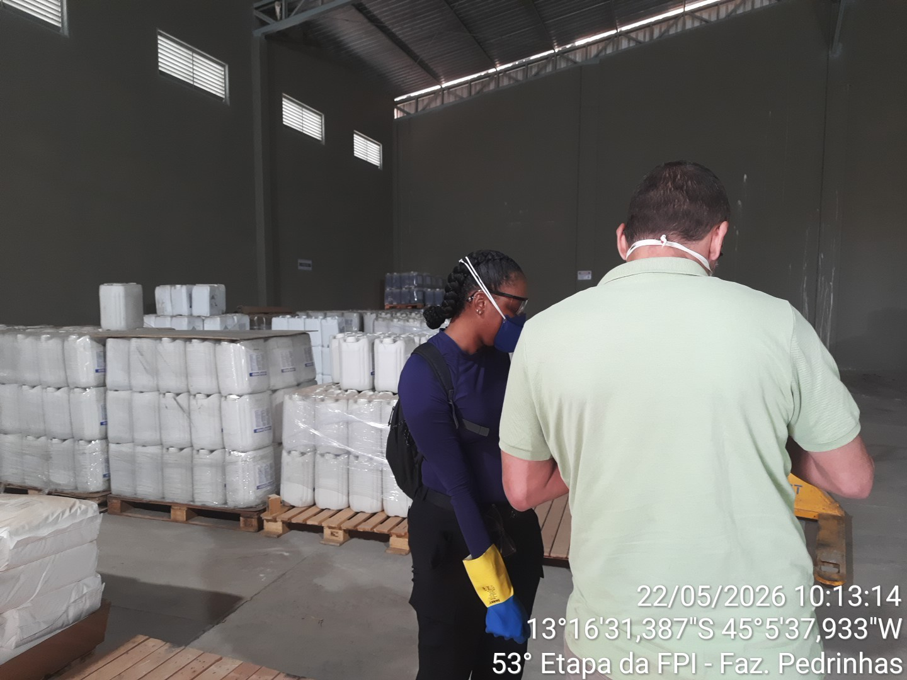
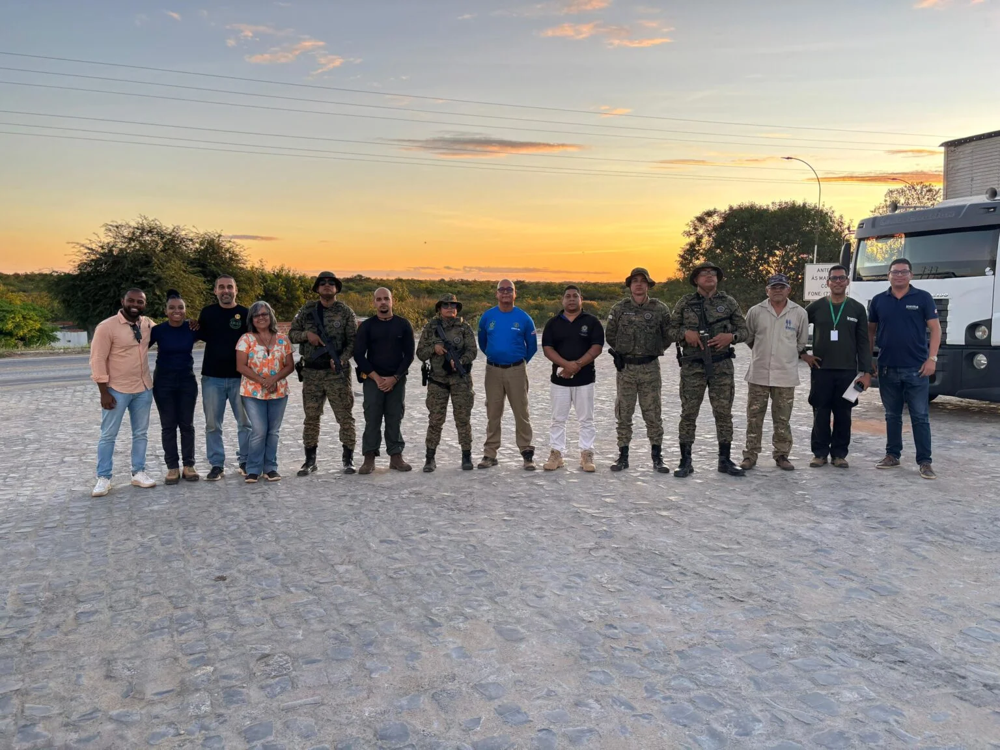
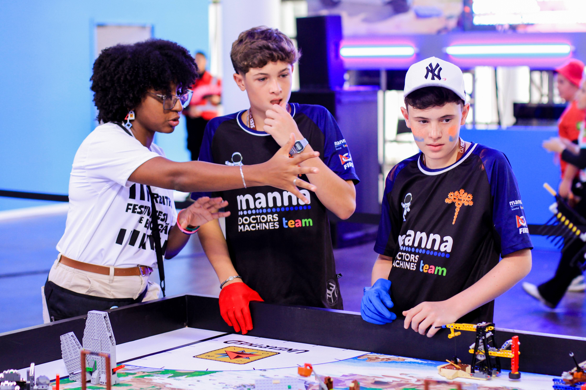
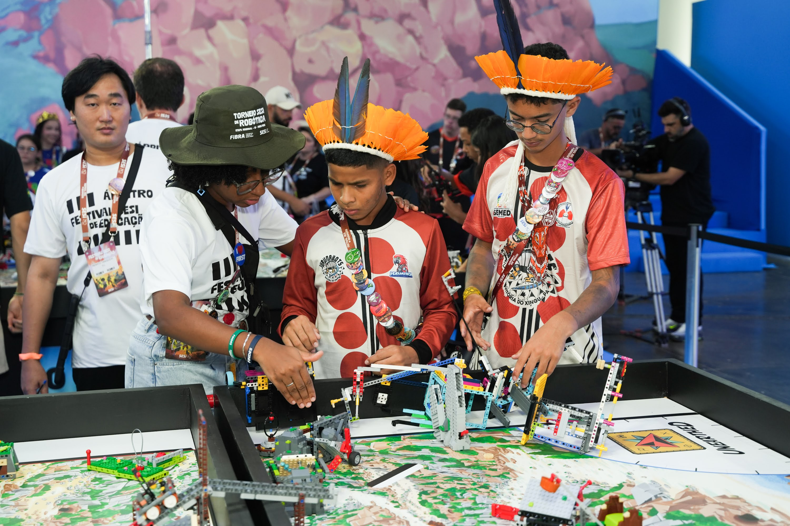

Integro ciência, dados e tecnologia para construir soluções aplicadas à área ambiental. Atuo na Bacia do Rio São Francisco e acredito que perspectivas diversas resolvem o que a especialização isolada não alcança.
Sou soteropolitana, bacharel em Ciências Biológicas. Minha trajetória começou na Escola SESI, onde surgiu o interesse por ciência e tecnologia — interesse que se transformou em carreira, voluntariado e projetos que atravessam diversas áreas.
Hoje atuo como consultora técnica ambiental no Programa FPI/BA e como servidora voluntária no MPBA–NUSF. Geoprocessamento, dados, campo e tecnologia caminham juntos no meu dia a dia.
Trajetória em
números.


Levamos robótica, ciência, exatas e artes para crianças de terreiro. O nome une o conceito Akan do Sankofa — olhar para as raízes para avançar — e Egbé, que em Yorubá significa grupo, coletivo.


Árbitra-Chefe, juíza voluntária e ex-competidora. 15 anos de envolvimento com robótica educacional no Brasil.
Juíza voluntária na etapa nacional (Robótica 2023, Centro de Convenções de Salvador).
Equipe Hypatia — 2º lugar em Salvador (out/2020). Batata transgênica com B-12 para combater insegurança alimentar. Equipe 100% feminina.
Participação em 2019 com soluções colaborativas para desafios reais.
Aberta a projetos, colaborações e oportunidades nas áreas ambiental, de dados e tecnologia.
Enviar mensagem